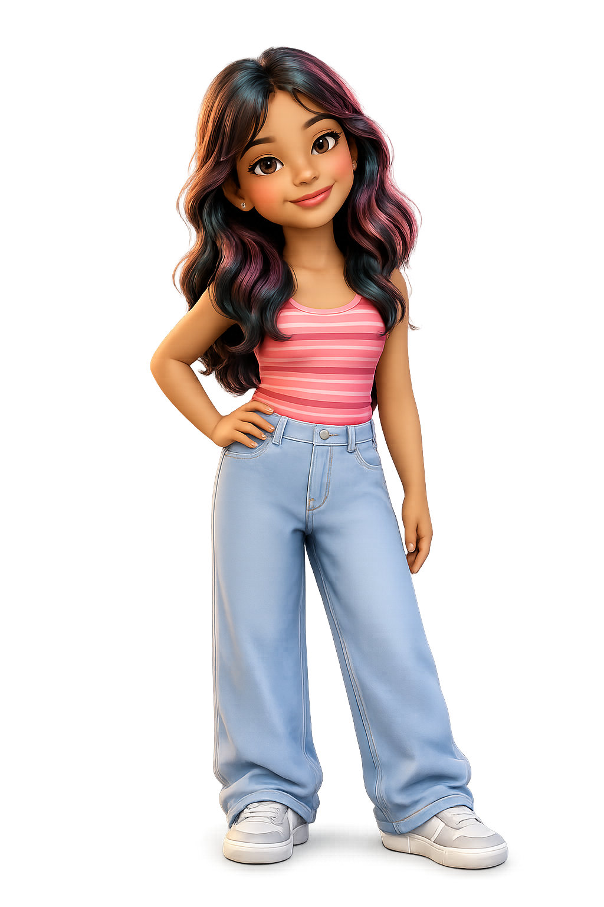

Product Designer · Mumbai · 2026
Practical, well-crafted design at the meeting point of material, process, and human experience. — BDes 2026
Design is the space between
what exists and what could.
A multidisciplinary practice — across product, furniture, spatial, graphic and craft.
Passionate about product and furniture design, with a deep love for the relationship between materials, craft, and functionality. Working with wood — lathe turning, laser cutting, Dremel detailing — is where I feel most in my element.
More about me